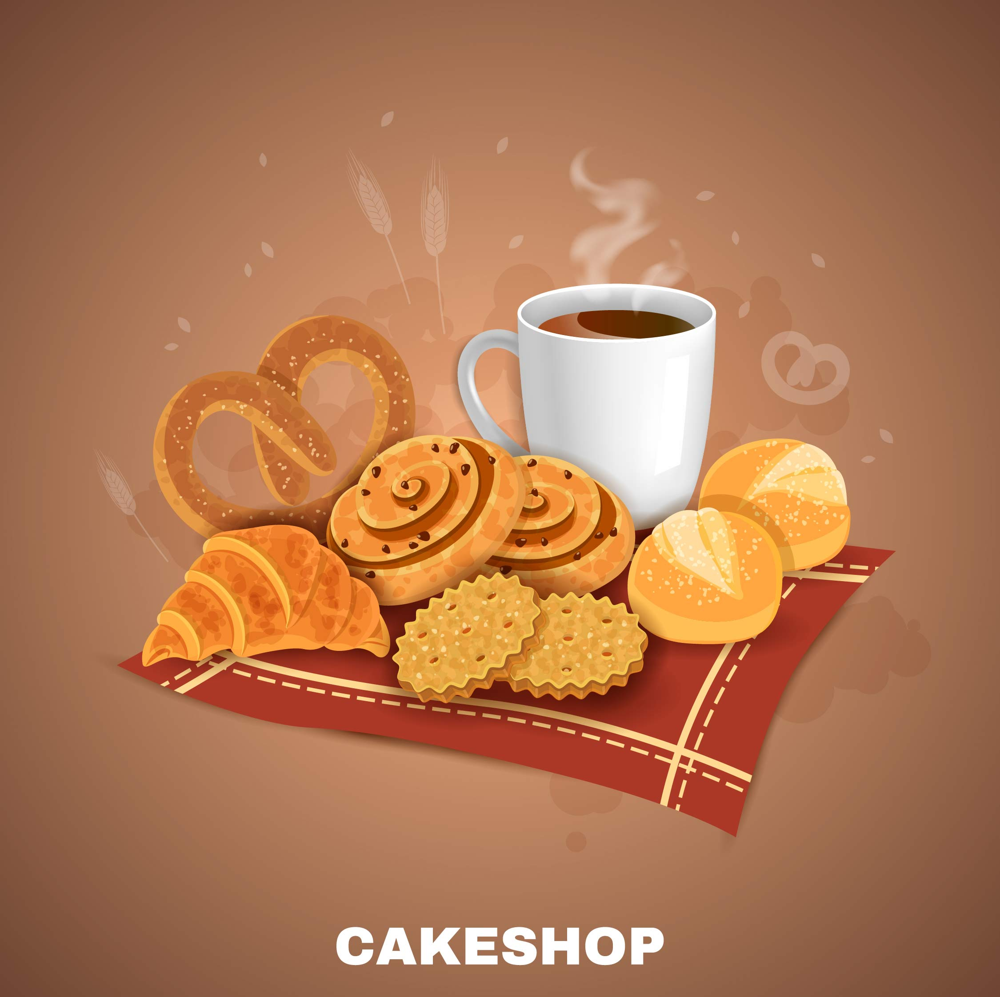
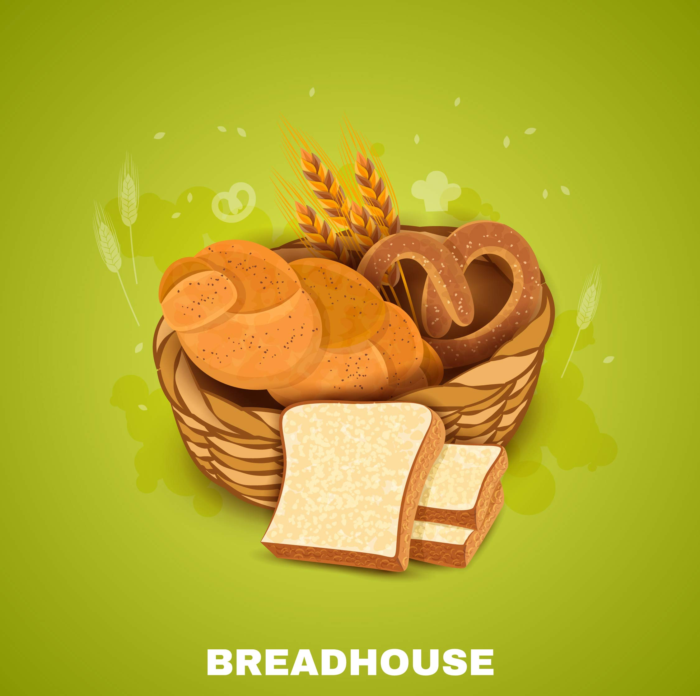
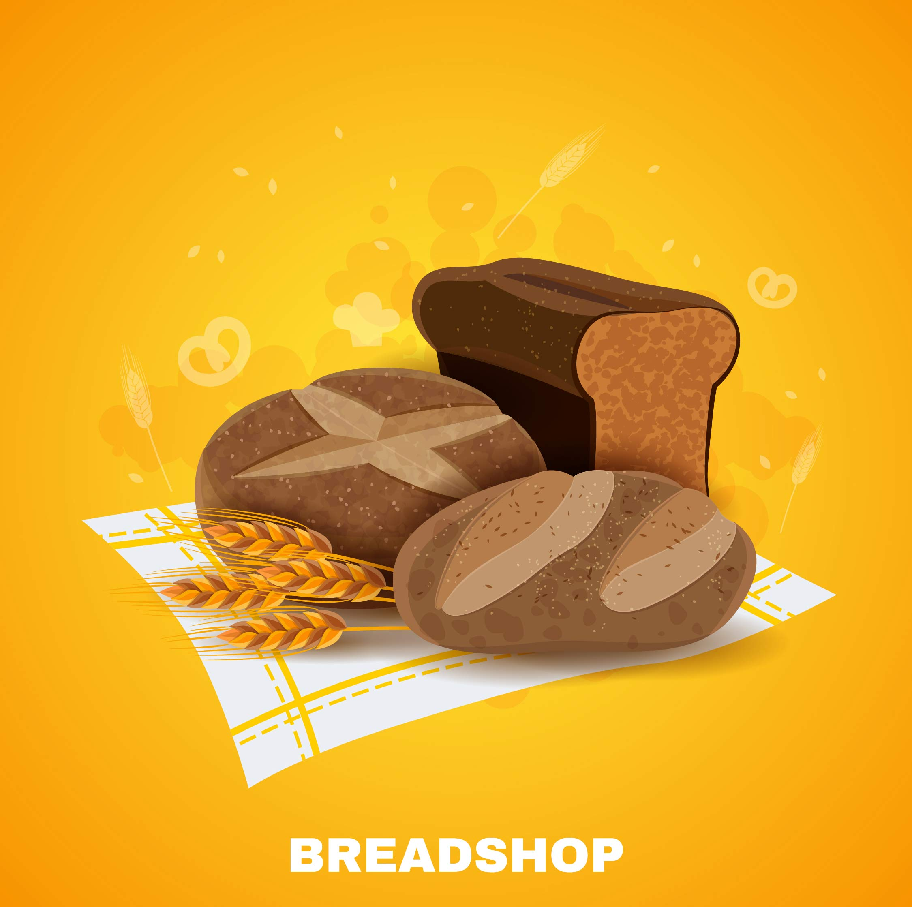
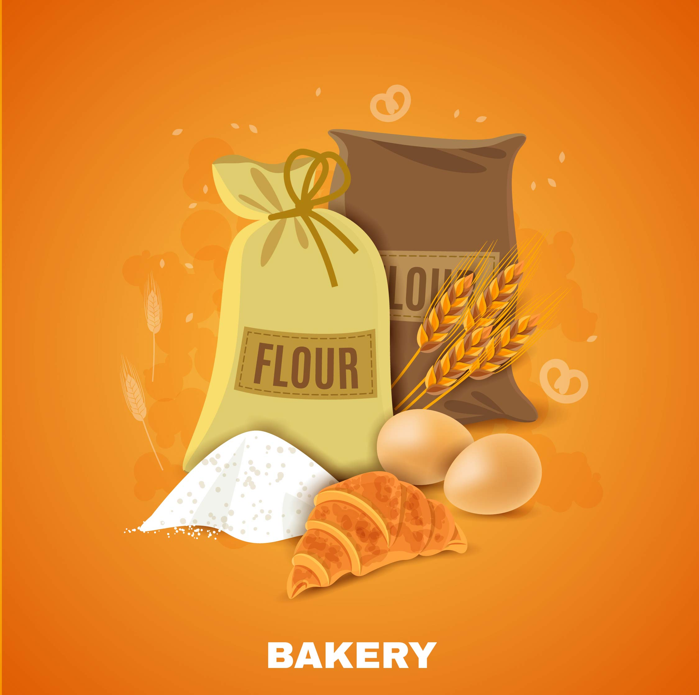

Bread N Butter bakery is open year round, with a full menu of freshly baked goods including pastries, cakes, cupcakes, pastries, breads, cookies, cakes, and of course bread and butter to take home with you for the holidays. We bake in the sunshine, with the sun shining through the window to the delight of our guests. The warmth of the kitchen has given us the opportunity to explore this wonderful part of the Kuruppampay (Kerala, India) which is perfect for baking.
Bread N Butter bakery offers local delivery and take-out services for those looking for something different when it comes down to allocating their dough. Bread N Butter also offer a selection of cakes, pastries and sandwiches. All the cakes and pastries are made fresh every day at our kitchen, cooked on our own beautifully heated ovens and then baked for you on our own beautifully heated bakers square ovens.



